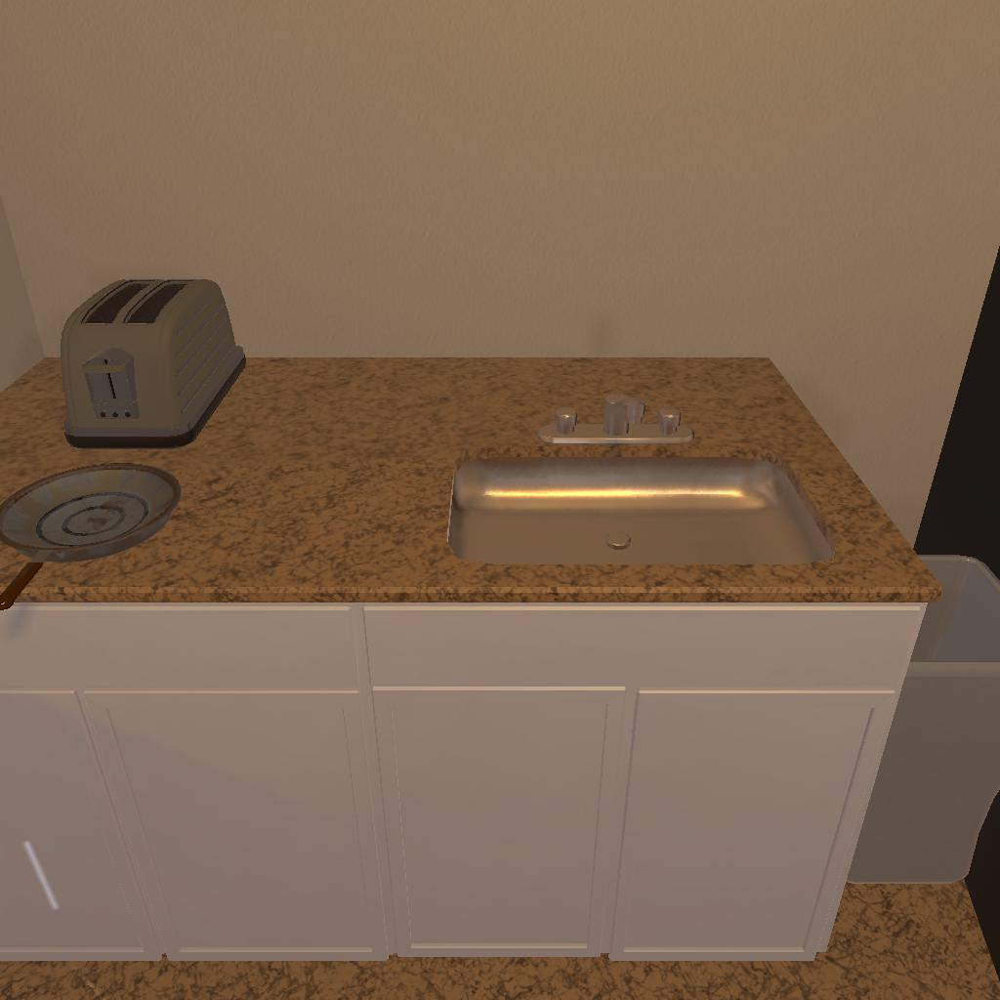

---------------------------------------------------------task: 13---------------------------------------------------------
--------------------------------------------------------------------------------------------------------------------------------------------------------------------
--------------------------------------------------------------------------------------------------------------------------------------------------------------------
Step:--------------------------------------------------------------------------15-------------------------------------------------------------------------------
----------------------------------------
VLM Prompt:
Image1:
Image2:
Image3:
**Instruction**
1. Analyze the provided images to identify all visible household objects and compare the difference between images (e.h. whether the object is opened or not and taken on hand or not), focusing on those relevant to the task description "put a clean tomato in garbagecan."
2. Use the analysis of images and the task hint "The agent must find an object of the desired type, pick it up, go to a sink or a basin, clean the object with a sink or basin, and then find the correct location to place it and put it down there. The agent does not need to use soap bottle or faucet to clean the object, and the agent just needs to do action that is "clean the object with the sink or sink basin"." to answer the question: what is the most reasonable action in the choices for the task description "put a clean tomato in garbagecan"?
3. Decide and write the answer using the template: The answer is: (i): , where i is the real number. If there is no desired object in images, search every place based on **Initial Observation** to find the object. And if no one is exactly correct, choose a similar answer.
**Initial Observation**
You are in the middle of a room. Looking quickly around you, you can see countertop (1-2), cabinet (1-11), garbagecan (1), toaster (1), sinkbasin (1), fridge (1), sink (1), microwave (1), drawer (1-3), stoveburner (1-4), coffeemachine (1), diningtable (1)
**Answer Choices**
(1): go to countertop 1
(2): go to cabinet 3
(3): go to garbagecan 1
(4): go to cabinet 4
(5): go to toaster 1
(6): go to sinkbasin 1
(7): go to fridge 1
(8): go to sink 1
(9): go to cabinet 5
(10): go to microwave 1
(11): go to countertop 2
(12): go to cabinet 6
(13): go to cabinet 7
(14): go to drawer 1
(15): go to stoveburner 1
(16): go to stoveburner 2
(17): go to cabinet 8
(18): go to drawer 2
(19): go to stoveburner 3
(20): go to stoveburner 4
(21): go to coffeemachine 1
(22): go to cabinet 9
(23): go to cabinet 10
(24): go to cabinet 11
(25): go to diningtable 1
(26): go to drawer 3
(27): open cabinet 2
(28): close cabinet 2
(29): examine cabinet 2
**Answer**
Let's think step by step by following the instructions.
----------------------------------------
----------------------------------------
Original Response:
Firstly, analyze the provided images to identify all visible household objects:
- Countertop
- Cabinet doors
- Sink
- Toaster
- Frying pan on countertop
There are no tomatoes or garbage cans visible in any of the images.
Based on the task description "put a clean tomato in garbagecan," and the hint provided, the agent needs to find a tomato, clean it in the sink, and then put it in the garbage can.
None of the answer choices directly mention finding a tomato, so we must look at the initial observation to decide where to search for the tomato. The most likely places to find a tomato would be in the fridge or on the countertop where food is typically prepared.
Given the options, the most reasonable action to take would be to go to the fridge where a tomato might be stored. After finding the tomato, the agent can then proceed to clean it in the sink and put it in the garbage can as per the task description.
The answer is: (7): go to fridge 1.
----------------------------------------
----------------------------------------
>>> Refine Original VLM Response and Get Pure Action: go to fridge 1
----------------------------------------
-----------------------------------------------------------------
Running time: 74.45632743835449 seconds
Total Money: 7.481260000000006
-----------------------------------------------------------------
-----------------------------------------------------------------
Text Observation:You arrive at loc 8. The fridge 1 is open. On the fridge 1, you see a bread 2, a cup 1, and a cup 2.
-----------------------------------------------------------------
UNSUCCEED